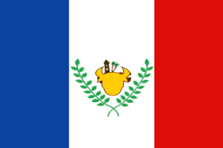
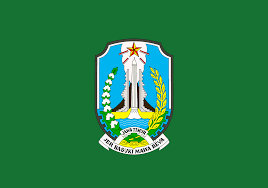
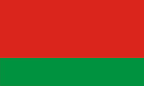

Day 9: Summary of Asia
We have learned a lot about Asia! It is a continent full of diversity and beauty. We explored countries like China, India, Japan, South Korea, Thailand, Indonesia, and the Philippines.
We saw mountains, beaches, islands, and big cities. We learned about different cultures, languages, and famous people from each country.
Asia is a wonderful place with so much to discover. We hope you enjoyed this journey and learned a lot about this amazing continent!
Color the Flags of Asia
Now, you can color the flags of Asian countries. Here are some flags for you to color:
| Region |
Flag |
Capital City |
| National Capital Region |
|
Manila |
| Central Visayas |
 |
Cebu City |
| Western Mindanao |
|
Zamboanga City |
| Ilocos |
|
San Fernando |
| Province |
Flag |
Capital City |
| Jakarta |
 |
Jakarta |
| Bali |
 |
Denpasar |
| West Java |
|
Bandung |
| East Java |
 |
Surabaya |
| Province |
Flag |
Capital City |
| Bangkok |
 |
Bangkok |
| Chiang Mai |
|
Chiang Mai |
| Phuket |
 |
Phuket |
| Surat Thani |
 |
Surat Thani |
| Province |
Flag |
Capital City |
| Seoul |
 |
Seoul |
| Busan |
 |
Busan |
| Incheon |
 |
Incheon |
| Gyeonggi |
|
Suwon |
| Prefecture |
Flag |
Capital City |
| Tokyo |
 |
Tokyo |
| Osaka |
 |
Osaka |
| Kyoto |
 |
Kyoto |
| Hokkaido |
 |
Sapporo |
| State |
Flag |
Capital City |
| Maharashtra |
 |
Mumbai |
| Uttar Pradesh |
 |
Lucknow |
| Tamil Nadu |
 |
Chennai |
| Karnataka |
 |
Bangalore |
| Province |
Flag |
Capital City |
| Beijing |
 |
Beijing |
| Shanghai |
|
Shanghai |
| Guangdong |
 |
Guangzhou |
| Sichuan |
 |
Chengdu |
Fun Facts about Asia
- Asia is the largest continent in the world, covering about 30% of the Earth's land area.
- It is home to the world's highest peak, Mount Everest, standing at 8,848 meters.
- The Great Wall of China is one of the most famous landmarks in Asia and spans over 21,000 km.
- Indonesia has the world's largest archipelago, with more than 17,000 islands.
- Japan's Tokyo is the world's most populous metropolitan area, with over 37 million residents.
Thank You for Exploring with Us!
We hope you enjoyed this exciting journey through Asia. Remember, there's always more to discover and learn about our beautiful world!